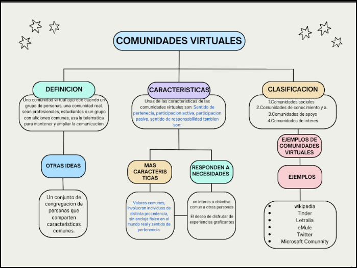
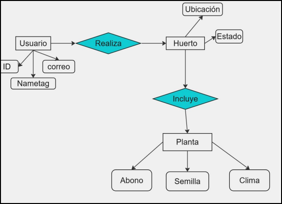
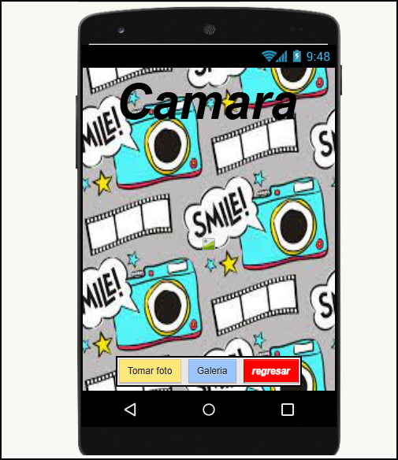

Bienvenidos ! ! !
Hola, mi nombre es J. Antonio Pérez Martínez, ¡aunque de hoy seré su profesor, felicidades! Es broma, solo es para romper el hielo. Como te fijás, los menús de arriba se encuentran organizados en 2 campos:
- Básica
- Capacitación
Para los de 1er y 2do semestre, dentro del menú Básica encontrarán enlaces a las siguientes páginas:
- Informática 1
- Informática 2
Para los que eligieron la capacitación de Informática aplicada:
- Módulo 1: Software de Aplicación
- Módulo 2: Hardware y Comunicación
- Módulo 3: Desarrollo de Sistemas
- Módulo 4: Software de Diseño
| Módulo 1 Software de Aplicación | Módulo 2 Hardware y Comunicación | Módulo 3 Desarrollo de Sistemas | Módulo 4 Software de Diseño |
|---|---|---|---|
| Aplicaciones Informáticas Documentos Digitales |
Comunidades Virtuales Mantenimiento y Redes de Computo |
Sistemas de Información Programación |
Páginas Web Diseño Digital |
Descripción de trabajos vistos

Comunidades virtuales

Sistemas de información

Aplicaciones informaticas